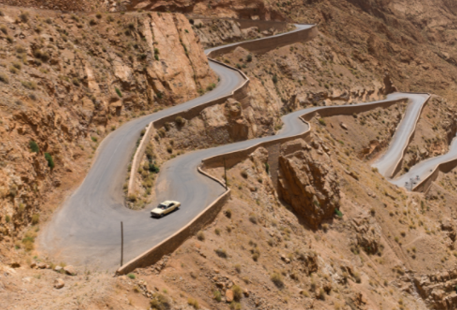

Estoy en el gran desierto del sahara por el tercer amanecer consecutivo.Pasamos de un lado a otro viendo el mapa de estralla blanqueados por el amanecer. aprovechando la luz del dia. la comunidad memoriza la posicion de puntos en la pagina, con esperanza de encontras alguna correlacion en negatvo, mientras el sol se oculta lentamente.
"Si se navega de noche se escuchan bonitos sonidos". Entoces se pued lanzar una bonita palabra.
"No se ve nada, ese es el punto!"
Como llegamos aqui?
Empezó hace ocho días cuando llegué a Malilla en el barco desde Málaga. El sol me golpeó como un juicio cuando subí a la pasarela. Un poco sobre Marruecos:

La larga y ancha carretera a Merrakec